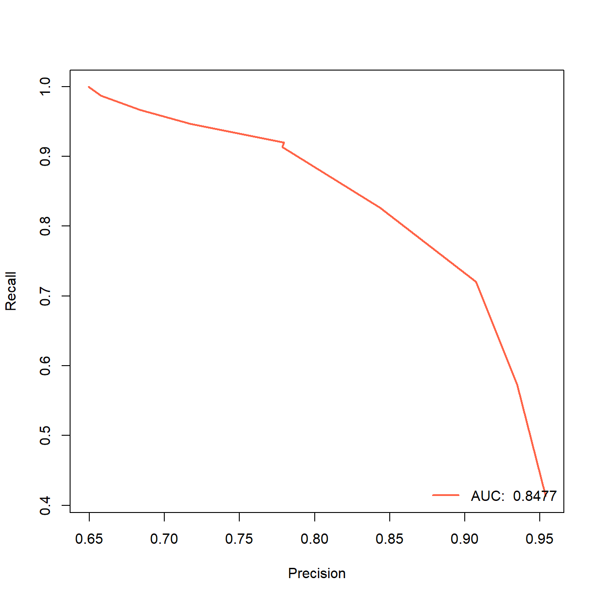
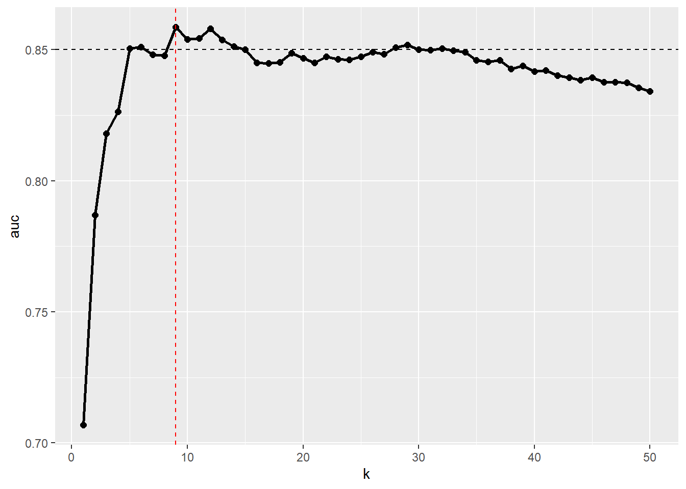

rm(list = ls())
load(file = "datasets/pimadiabetes.rdata")
dim(pimadiabetes)
## [1] 768 9
str(pimadiabetes)
## 'data.frame': 768 obs. of 9 variables:
## $ pregnant: num 6 1 8 1 0 5 3 10 2 8 ...
## $ glucose : num 148 85 183 89 137 116 78 115 197 125 ...
## $ pressure: num 72 66 64 66 40 ...
## $ triceps : num 35 29 22.9 23 35 ...
## $ insulin : num 202.2 64.6 217.1 94 168 ...
## $ mass : num 33.6 26.6 23.3 28.1 43.1 ...
## $ pedigree: num 0.627 0.351 0.672 0.167 2.288 ...
## $ age : num 50 31 32 21 33 30 26 29 53 54 ...
## $ diabetes: Factor w/ 2 levels "pos","neg": 2 1 2 1 2 1 2 1 2 2 ...14 K最近邻
本文主要介绍如何使用R语言实现K最近邻算法。
前面介绍的线性回归和逻辑回归大家可能比较熟悉，毕竟医学统计学中这两个方法是必学的，但是从KNN开始，后面的方法可能就比较陌生了。
14.1 算法简介
K最近邻（K-Nearest-Neighbor，KNN）是一种非线性的分类算法，KNN处理分类问题的方法是：找K个距离待遇测样本最近的点，然后根据这几个点的类别来确定新样本的类别。
近朱者赤，近墨者黑。
下面以一个二分类问题为例说明KNN的思想。
下图有两个特征可以用来预测肿瘤是”良性”还是”恶性”。图中的X表示我们要预测的新样本。如果算法设定k=3，那么圆圈中包含的3个观测就是样本X的最近邻。因为其中占多数比例的类别是”恶性”，所以样本X被分类为”恶性”。

思想是不是很简单？K的选择对于KNN的预测结果是非常重要的。
KNN中另一个需要指出的重要问题是距离的计算方法，或者说是特征空间中数据点的临近度的计算。默认的距离是欧氏距离，也就是从点A到点B的简单直线距离。
注释
两点间的距离强烈依赖于测量特征时使用的单位，所以必须对其进行标准化，而且要求数据不能有缺失值。
14.2 准备数据
演示数据为印第安人糖尿病数据集，这个数据一共有768行，9列，其中diabetes是结果变量，为二分类，其余列是预测变量。
该数据集的原始版本是有缺失值的，我这里使用的是插补过的版本，详细过程请参考数据准备这一章。
各个变量的含义：
pregnant：怀孕次数glucose：血浆葡萄糖浓度（葡萄糖耐量试验）pressure：舒张压（毫米汞柱）triceps：三头肌皮褶厚度（mm）insulin：2小时血清胰岛素（mu U/ml）mass：BMIpedigree：糖尿病谱系功能，是一种用于预测糖尿病发病风险的指标，该指标是基于家族史的糖尿病遗传风险因素的计算得出的。它计算了患者的家族成员是否患有糖尿病以及他们与患者的亲缘关系，从而得出一个综合评分，用于预测患糖尿病的概率。age：年龄diabetes：是否有糖尿病
先对数据进行标准化：
# 对数值型变量进行标准化
pimadiabetes[,-9] <- scale(pimadiabetes[,-9])
str(pimadiabetes)
## 'data.frame': 768 obs. of 9 variables:
## $ pregnant: num 0.64 -0.844 1.233 -0.844 -1.141 ...
## $ glucose : num 0.863 -1.203 2.011 -1.072 0.503 ...
## $ pressure: num -0.0314 -0.5244 -0.6887 -0.5244 -2.6607 ...
## $ triceps : num 0.63124 -0.00231 -0.64853 -0.63586 0.63124 ...
## $ insulin : num 0.478 -0.933 0.63 -0.631 0.127 ...
## $ mass : num 0.172 -0.844 -1.323 -0.626 1.551 ...
## $ pedigree: num 0.468 -0.365 0.604 -0.92 5.481 ...
## $ age : num 1.4251 -0.1905 -0.1055 -1.0409 -0.0205 ...
## $ diabetes: Factor w/ 2 levels "pos","neg": 2 1 2 1 2 1 2 1 2 2 ...14.3 class包
数据划分为训练集和测试集，划分比例为7：3。
但是R语言里class包在使用时需要把真实结果去掉，所以我们把真实结果去掉，只保留预测变量。
# 划分是随机的，设置种子数可以让结果复现
set.seed(123)
ind <- sample(1:nrow(pimadiabetes), size = 0.7*nrow(pimadiabetes))
# 去掉真实结果列
train <- pimadiabetes[ind,-9]
test <- pimadiabetes[-ind, -9]
dim(train)
## [1] 537 8
dim(test)
## [1] 231 8
str(train)
## 'data.frame': 537 obs. of 8 variables:
## $ pregnant: num -1.141 1.233 0.343 -0.251 1.233 ...
## $ glucose : num 0.535 -1.564 0.699 -1.137 -1.203 ...
## $ pressure: num -1.017 -0.196 0.462 -1.017 -1.428 ...
## $ triceps : num 0.631 1.159 0.86 -1.164 -0.953 ...
## $ insulin : num 0.117 -1.092 1.093 -0.881 -0.767 ...
## $ mass : num 0.317 0.419 1.827 -1.541 -1.164 ...
## $ pedigree: num 0.1875 0.7036 -0.8507 -0.0841 -1.0137 ...
## $ age : num -1.041 0.49 1.17 -1.041 0.745 ...
# 把真实结果列单独拿出来，后面用
truth_train <- pimadiabetes[ind,9]
truth_test <- pimadiabetes[-ind,9]14.3.1 建立模型
在训练集建立模型，1行代码搞定，1行代码即可实现：在训练集拟合模型，并对测试集做出预测：
library(class)
f <- knn(train = train, # 训练集，只有预测变量，没有结果变量
test = test, # 测试集，没有结果变量
cl = truth_train, # 训练集的真实结果
k = 8, # 使用的近邻个数
prob = TRUE # 需要计算概率
)
# 查看测试集的预测结果，只看前6个
head(f)
## [1] neg neg pos neg neg pos
## Levels: pos neg
# 查看测试集的预测概率，只看前6个
prob <- attr(f,"prob")
head(prob)
## [1] 0.500 0.750 1.000 0.750 0.625 0.625此时得到的f这个结果是一个因子型的向量，而且是有名字和属性的，大多数模型拟合结果的格式都是不一样的，使用时需要注意！
还要注意这里的概率，并不是阳性结果的概率，而是预测结果的概率！比如第一个概率0.500是neg的概率，第二个概率0.750是neg的概率，第三个概率1.000是pos的概率！
所以你如果想要阳性结果(pos)的概率，需要自己计算一下：
prob <- ifelse(f == "pos", prob, 1-prob)
head(prob)
## [1] 0.500 0.250 1.000 0.250 0.375 0.62514.3.2 模型评价
模型拟合好之后，下一步就是查看模型的各种指标，来看看这个模型在训练集中的表现如何，比如混淆矩阵、AUC值、准确率等。
不管是什么类型的模型，如果我们想要评价它的模型表现，都是需要用到模型的预测结果和真实结果的。
对于回归任务来说，预测结果也是数值型的，对于分类任务来说，模型的预测结果可以是某一种类别的概率，也可以是预测出的具体类别。大多数模型都是既支持计算类别概率又支持计算具体类别的，但是有些模型可能只支持一种类型。
首先查看混淆矩阵，我们借助caret包展示，这个包目前仍然是查看混线矩阵最全面的，，没有之一，非常好用！
# 借助caret包，f是预测的类别，truth_test是真实的结果
caret::confusionMatrix(f,truth_test)
## Confusion Matrix and Statistics
##
## Reference
## Prediction pos neg
## pos 131 32
## neg 19 49
##
## Accuracy : 0.7792
## 95% CI : (0.7201, 0.831)
## No Information Rate : 0.6494
## P-Value [Acc > NIR] : 1.269e-05
##
## Kappa : 0.4966
##
## Mcnemar's Test P-Value : 0.09289
##
## Sensitivity : 0.8733
## Specificity : 0.6049
## Pos Pred Value : 0.8037
## Neg Pred Value : 0.7206
## Prevalence : 0.6494
## Detection Rate : 0.5671
## Detection Prevalence : 0.7056
## Balanced Accuracy : 0.7391
##
## 'Positive' Class : pos
## 结果非常全面，最上面是混淆矩阵，然后给出了：
- 准确率（Accuracy）和准确率的可信区间（95% CI）
- 无信息率（No Information Rate）和P值（P-Value Acc>NIR]）、
- Kappa值（Kappa一致性指数）
- Mcnemar检验的P值（Mcnemar’s Test P-Value）
- 敏感性、特异性
- 阳性预测值、阴性预测值
- 流行率（Prevalence）
- 检出率（Detection Rate）
- （Detection Prevalence）
- 均衡准确率（Balanced Accuracy）
最后告诉你参考类别是pos。
当然这些值你也可以单独计算：
caret::precision(f,truth_test) # 精准率
## [1] 0.803681
caret::recall(f,truth_test) # 召回率，灵敏度
## [1] 0.8733333
caret::F_meas(f,truth_test) # F1分数
## [1] 0.8370607然后再画个ROC曲线。首先使用ROCR进行演示，不管是什么包，都遵循前面说过的规律，画ROC曲线是需要真实结果和预测概率的！
library(ROCR)
# ROCR画ROC曲线就是2步，先prediction，再performance
pred <- prediction(prob,truth_test) # 预测概率，真实类别
perf <- performance(pred, "tpr","fpr") # ROC曲线的横纵坐标，不要写错了
auc <- round(performance(pred, "auc")@y.values[[1]],digits = 4) # 提取AUC值
auc
## [1] 0.8477
# 画图
plot(perf,lwd=2,col="tomato")
abline(0,1,lty=2) # 添加对角线
# 添加图例
legend("bottomright", legend=paste("AUC: ",auc), col="tomato", lwd=2,bty = "n")
另一种方法，使用pROC进行演示，还是那句话，不管是哪种方法，画ROC曲线都是需要提供真实结果和预测概率！
library(pROC)
rocc <- roc(truth_test, prob) # 预测概率，真实结果
rocc # 看下结果
##
## Call:
## roc.default(response = truth_test, predictor = prob)
##
## Data: prob in 150 controls (truth_test pos) > 81 cases (truth_test neg).
## Area under the curve: 0.8477
# 画图
plot(rocc,
print.auc=TRUE,
auc.polygon=TRUE,
max.auc.polygon=TRUE,
auc.polygon.col="skyblue",
grid=c(0.1, 0.2),
grid.col=c("green", "red"),
print.thres=TRUE)
关于ROC曲线绘制的合集，共13篇文章，链接：ROC曲线绘制合集
顺手再展示下PR曲线，也是用ROCR实现：
library(ROCR)
# ROCR画ROC曲线就是2步，先prediction，再performance
pred <- prediction(prob,truth_test) # 预测概率，真实类别
perf <- performance(pred, "rec","prec") # ROC曲线的横纵坐标，不要写错了
auc <- round(performance(pred, "auc")@y.values[[1]],digits = 4) # 提取AUC值
auc
## [1] 0.8477
# 画图
plot(perf,lwd=2,col="tomato")
# 添加图例
legend("bottomright", legend=paste("AUC: ",auc), col="tomato", lwd=2,bty = "n")
是不是非常easy？
顺手再画个校准曲线，公众号后台回复校准曲线即可获取合集，也是非常简单：
我这里给大家介绍最新的方法（其实之前也介绍过了），用probably这个包绘制：
library(probably)
cali_data <- data.frame(.pred_pos = prob, diabetes=truth_test)
cal_plot_breaks(cali_data,diabetes, .pred_pos,conf_level = 0.95)
但是目前这个版本（1.0.3）有个bug，第3个参数estimate，必须是.pred_xxx，其中的xxx必须是真实结果中的某一个类别，比如我这个数据diabetes中的类别就是pos和neg，那么这个名字就必须是.pred_pos或者.pred_neg，其他都会报错（下标出界）！！
顺手再画个决策曲线，这个决策曲线是临床预测模型中才有的内容，其他内容基本上都是机器学习的基础知识。后台回复决策曲线即可获取合集：
source("datasets/dca.r")
# 把概率加到测试集中
dca_data <- pimadiabetes[-ind,]
dca_data$prob <- prob
# 结果变量变成0，1
dca_data$diabetes <- ifelse(dca_data$diabetes=="pos",1,0)
dc <- dca(data = dca_data, # 测试集
outcome = "diabetes",
predictors = "prob",
probability = T
)
太简单！
前几年stdca.r和dca.r这两个脚本是可以在网络中免费下载的，但是从2022年底左右这个网站就不提供这两段代码的下载了。因为我很早就下载好了，所以我把这两段代码放在粉丝qq群文件里，大家有需要的加群下载即可。。当然我还介绍了很多其他方法，公众号后台回复决策曲线即可获取合集。
14.3.3 超参数调优
KNN算法只有一个超参数，就是近邻的数量，所以KNN的超参数调优其实就是如何确定最佳的K值，到底用几个近邻是能得到最好的结果呢？
现在有很多好用的工具可以实现调优过程了，比如caret、tidymodels、mlr3等，但是这里我给大家演示下for循环的做法，因为它只有1个超参数，很适合这种方法，还可以绘制学习曲线。
模型评价指标选择AUC。
aucs <- list()
for (i in 1:50) { # K的值选择1~50
f <- knn(train = train, # 训练集
test = test, # 测试集
cl = truth_train, # 训练集的真实类别
k = i, # 使用的近邻个数
prob = TRUE # 需要计算概率
)
prob <- attr(f,"prob")
prob <- ifelse(f == "pos", prob, 1-prob)
pred <- prediction(prob,truth_test)
perf <- performance(pred, "tpr","fpr")
auc <- round(performance(pred, "auc")@y.values[[1]],digits = 4)
aucs[[i]] <- auc
}
aucs <- do.call(rbind,aucs)[,1]
aucs # 50个AUC值，分别对应50个K值
## [1] 0.7068 0.7870 0.8180 0.8264 0.8505 0.8510 0.8481 0.8477 0.8586 0.8540
## [11] 0.8543 0.8580 0.8537 0.8513 0.8500 0.8451 0.8449 0.8453 0.8488 0.8467
## [21] 0.8450 0.8473 0.8464 0.8462 0.8474 0.8492 0.8483 0.8508 0.8519 0.8500
## [31] 0.8499 0.8504 0.8497 0.8491 0.8460 0.8455 0.8460 0.8427 0.8439 0.8417
## [41] 0.8422 0.8402 0.8393 0.8384 0.8393 0.8377 0.8377 0.8374 0.8356 0.8342画个图看下不同的K值对应的AUC变化的情况，看图更加直观：
plot_df <- data.frame(k=1:50,auc=aucs)
library(ggplot2)
ggplot(plot_df, aes(k,auc))+
geom_line(linewidth=1)+
geom_point(size=2)+
geom_hline(yintercept = 0.85,linetype = 2)+
geom_vline(xintercept = 9,linetype = 2,color="red")
结果显示当K=9的时候，AUC值是最大的，此时是0.8586。
这个图其实是一个学习曲线图，是一种经典的进行超参数调优时使用的图，我在介绍决策树的超参数调优时介绍过了，不知道大家有没有印象？
所以此时你可以用K=9再重新跑一遍模型，作为你最终的结果。
final_f <- knn(train = train, # 训练集，只有预测变量，没有结果变量
test = test, # 测试集，没有结果变量
cl = truth_train, # 训练集的真实结果
k = 9, # 这里的K值选择9哦！！！
prob = TRUE # 需要计算概率
)后续模型评价、画ROC曲线就是一样的代码了，就不再重复了。
14.4 kknn包
数据划分为训练集和测试集，划分比例为7：3。
kknn包不需要把结果变量去掉。
# 划分是随机的，设置种子数可以让结果复现
set.seed(123)
ind <- sample(1:nrow(pimadiabetes), size = 0.7*nrow(pimadiabetes))
# 训练集、测试集
train <- pimadiabetes[ind,]
test <- pimadiabetes[-ind, ]
# 把真实结果列单独拿出来，后面用
truth_train <- pimadiabetes[ind,9]
truth_test <- pimadiabetes[-ind,9]14.4.1 建立模型
在训练集拟合模型，支持R语言经典的formula形式：
library(kknn)
fit <- kknn::kknn(diabetes ~ ., train, test,
scale = F, # w我们已经对数据进行过标准化了，这里就不用了
)
# 直接summary可以查看预测类别和预测概率，太长不展示
#summary(fit)我们最关心的东西其实只有预测类别和预测概率而已，所以可以单独查看它们：
# 预测类别
pred_class <- fit[["fitted.values"]]
head(pred_class)
## [1] neg neg pos neg pos pos
## Levels: pos neg
# 预测概率
pred_prob <- fit[["prob"]]
head(pred_prob)
## pos neg
## [1,] 0.3860350 0.6139650
## [2,] 0.3440688 0.6559312
## [3,] 1.0000000 0.0000000
## [4,] 0.2768308 0.7231692
## [5,] 0.6679614 0.3320386
## [6,] 0.5939196 0.4060804而且这个包的结果给出了两种类别的概率，不用再自己计算了。
14.4.2 模型评价
首先还是借助caret包查看混淆矩阵等各种信息：
caret::confusionMatrix(pred_class,truth_test)
## Confusion Matrix and Statistics
##
## Reference
## Prediction pos neg
## pos 131 34
## neg 19 47
##
## Accuracy : 0.7706
## 95% CI : (0.7109, 0.8232)
## No Information Rate : 0.6494
## P-Value [Acc > NIR] : 4.558e-05
##
## Kappa : 0.4738
##
## Mcnemar's Test P-Value : 0.05447
##
## Sensitivity : 0.8733
## Specificity : 0.5802
## Pos Pred Value : 0.7939
## Neg Pred Value : 0.7121
## Prevalence : 0.6494
## Detection Rate : 0.5671
## Detection Prevalence : 0.7143
## Balanced Accuracy : 0.7268
##
## 'Positive' Class : pos
## 然后是绘制ROC曲线，完全一样的代码：
library(ROCR)
pred <- prediction(pred_prob[,1],truth_test) # 预测概率，真实类别
perf <- performance(pred, "tpr","fpr")
auc <- round(performance(pred, "auc")@y.values[[1]],digits = 4)
auc
## [1] 0.8491
plot(perf,lwd=2,col="tomato")
abline(0,1,lty=2)
legend("bottomright", legend=paste("AUC: ",auc), col="tomato", lwd=2,bty = "n")
easy！一样的用法，基本没啥变化，所以pROC的画法就不再重复了，大家想要学习的就自己写一下即可。
PR曲线、校准曲线、决策曲线也是一样的简单，就不重复了。
14.4.3 超参数调优
借助for循环也可以，这里再给大家演示下如何使用e1071包实现轻量化的超参数调优。
library(e1071)
set.seed(123)
tune.knn(x=train[,-9], # 预测变量
y=truth_train,# 结果变量
k=1:50 # k的值
)
##
## Parameter tuning of 'knn.wrapper':
##
## - sampling method: 10-fold cross validation
##
## - best parameters:
## k
## 25
##
## - best performance: 0.21981131行代码出结果，默认是使用10折交叉验证，比我们的手动for循环更加稳健，结果最佳的k值是25。使用的评价指标不同，具体计算的步骤也不一样，得出的结果不一样是很正常的。
如果你想用caret、tidymodels、mlr3实现，那就需要学习它们的语法了，后台回复关键词即可获取合集教程。